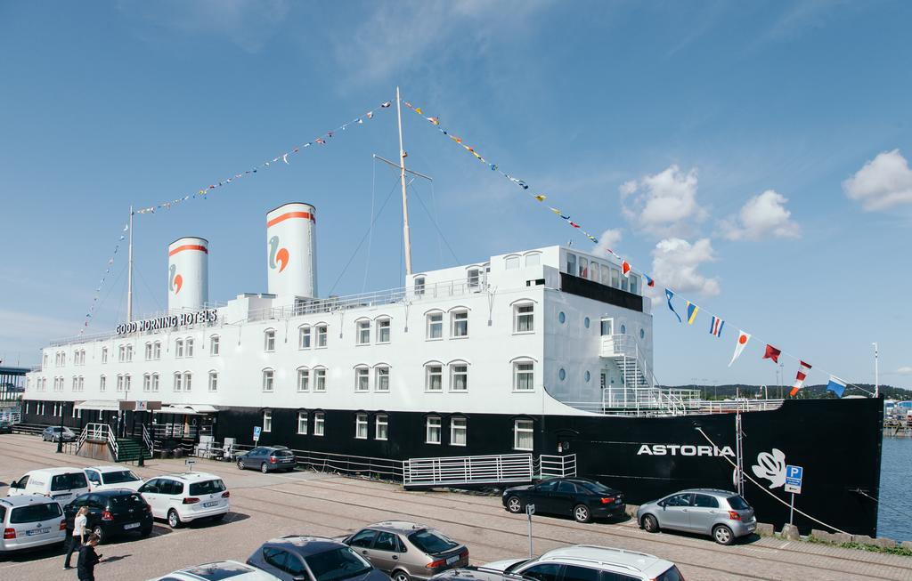

Gullbergs kaj

I albumet "Det är så jag säger det" finns det med en låt som heter "Mitt Gullbergs kaj paradis". Det är taget från denna platsen. En kaj som ligger vid Gullbergsvassen mitt i centrala Göteborg. Det ligger ett hotell som heter Hotell Good Morning previs vid vattnet. Det är en stor båt.
